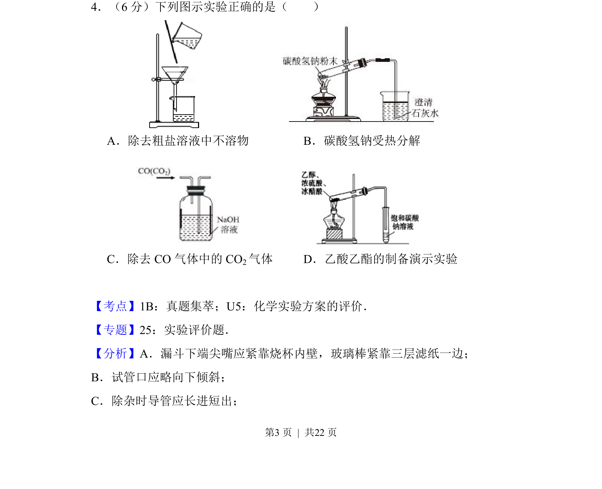
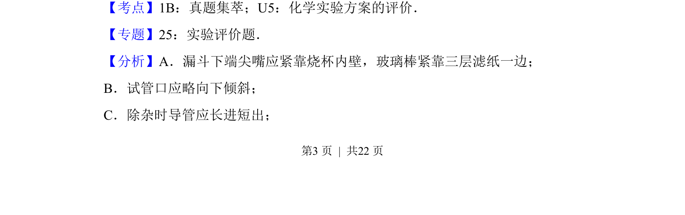
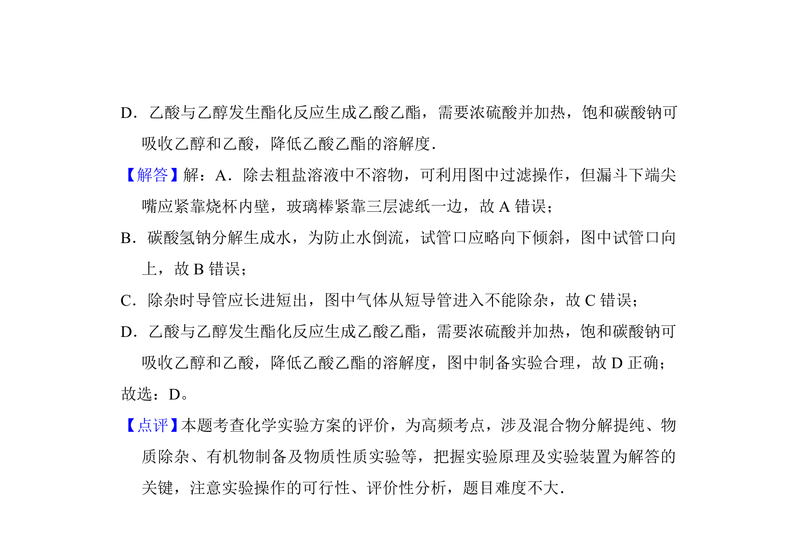

考点：化学实验方案评价 过滤 固体加热 洗气除杂 乙酸乙酯制备

该题通过四个图示考查常见化学实验操作的正误评价，涉及过滤、固体加热、洗气除杂和乙酸乙酯制备。


📄 原 PDF 第 3 页：
素材/真题/吉林/2008-2024·（吉林）化学高考真题/2014年高考化学试卷（新课标Ⅱ）（解析卷）.pdf
4．（6分）下列图示实验正确的是（ ）
A．除去粗盐溶液中不溶物B．碳酸氢钠受热分解
C．除去CO气体中的CO 2气体D．乙酸乙酯的制备演示实验
【考点】1B：真题集萃；U5：化学实验方案的评价．菁优网版权所有 【专题】25：实验评价题． 【分析】A．漏斗下端尖嘴应紧靠烧杯内壁，玻璃棒紧靠三层滤纸一边； B．试管口应略向下倾斜； C．除杂时导管应长进短出；